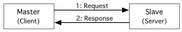

Understanding the Modbus Protocol
About
This document introduces the reader to the Modbus protocol. It presents a basic protocol description and discusses the serial and the TCP based implementations.
Modbus Protocol Basics
Basically Modbus is an application layer protocol (see Figure 1) for communication between devices, mainly to exchange data typical for the field of automation.
Figure 1: ISO/OSI Context
|
|
At this level Modbus is a stateless client-server protocol (e.g. much like HTTP), based on transactions, which consist of a request (issued by the client) and a response (issued by the server). In the field where this protocol is usually applied, there exists a concept that is one of the possible schemas governing the lower level communication behavior on a network using a shared signal cable: Master-Slave. To prevent confusion, the following directed relations describe Master-Slave in terms of the Client-Server paradigm:
- the Master is a Client
- the Slave is a Server
A transaction and it's context is visualized in Figure 2.
Figure 2: Modbus Transaction
|

|
The stateless communication is based on a simple package, that is called Protocol Data Unit (PDU). The protocol specification defines three types of PDU's:
-
Request PDU, consisting of:
- a code specifying a function (Function Code, 1 byte)
- and function specific data (Function Data, varying number of bytes)
-
Response PDU, consisting of:
- the function code corresponding to the request (Function Code, 1 byte)
- and response specific data (Response Data, varying number of bytes)
-
Exception Response PDU, consisting of:
- the function code corresponding to the request + 0x80 (128), (Error Code, 1 byte)
- and a code specifying the exception (Exception Code, 1 byte)
Figure 3 presents a visualization of these packages.
Figure 3: Modbus Protocol Data Units (PDU)
|
|
Modbus Functions
The specification defines a certain number of functions, each of which is assigned a specific function code. These are in the range 1-127 (decimal), as 129(1+128)- 255(127+128) represents the range of error codes. While the first published version of the specification defined different classes of functions (e.g. Class 0, Class 1, Class 2), the newly released specification (from http://www.modbus.org; see Knowledge Base Index) defines categories of function codes:
-
Public
Are guaranteed to be unique and specify well defined functions that are publicly documented. These are validated by the community and a conformance test exists. -
User-Defined
Are available for user-defined functions, thus their codes might not be unique. The specification defines the code ranges 65-72 and 100-110 for user-defined functions. -
Reserved
These are currently used by some companies for legacy products and are not available for public use (these are not discussed any further in the specification).
The documentation for a function consists of:
- a description of the function (i.e. what it is good for), it's parameters and return values (including possible exceptions).
- the assigned Function Code
- the Request PDU
- the Response PDU
- the Exception Response PDU
The specification further documents defined and assigned public functions.
Exceptions
In certain cases, the response from a slave will be an exception. The primary identification of an exception response is the error code (function code + 128), which is further specified by the exception code. Assigned codes and descriptions can be found in the specification.
Modbus Data Model
The basic public functions have been developed for exchanging data typical for the field of automation. Table 1 contains the basic Modbus data types defined by the specification.
Table 1: Modbus Data Types
| Name | Type | Access | Visual |
|---|---|---|---|
| Discrete Input | single bit | read-only |
|
| Discrete Output (Coils) | single bit | read-write |
|
| Input Registers | 16-bit word | read-only |
|
| Holding Registers (Registers) | 16-bit word | read-write |
|
Modbus Implementations
Basically Modbus has been implemented and used over all types of physical links (wire, fiber and radio) and various types of lower level communication stacks. However, we will concentrate on the two basic types of implementations (which are supported by jamod):
- Serial: Asynchronous Master/Slave
- IP: Master/Slave
Serial Modbus Implementations
Modbus started it's life in form of an implementation for asynchronous serial network communication. The application level protocol operates directly on top of a serial interface and serial communication standards. The most common ones (over wire) are:
-
RS232 (EIA232):
see The RS232 Standard -
RS422/RS485:
see Introduction to RS422 and RS485
RS232 is used for short distance point-to-point communication,
the same is valid for RS 422, which is a bidirectional extension of RS232 for
industrial environments, that also supports longer distances.
RS485 can be used for multipoint communication (i.e. multiple devices connected to the same signal
cable), employing the Master-Slave paradigm (one master and n fixed address slaves).
Figure 4 visualizes the possible network setups.
Figure 4: Serial Network Architectures
|
|
To enable the actual communication for this setups, the implementation extends the PDU with additional fields, better said, it wraps the PDU into a package with a header and an error checksum (see Figure 5). The resulting package is defined by the protocol specification as Application Data Unit (ADU), that has a maximum package size of 256 bytes.
Figure 5: Serial ADU
|
|
The header is composed of an address field (1 byte) and the tail is an error checksum over the whole package, including the address field (i.e. header). For transmission the Modbus message (i.e. ADU) is placed into a frame that has a known beginning and ending point, allowing detection of the start and the end of a message and thus partial messages. There exist two transmission modes, which differ in encoding, framing and checksum:
-
ASCII
Frames are encoded into two ASCII characters per byte, representing the hexadecimal notation of the byte (i.e. characters 0–9, A–F). The error checksum is represented by a longitudinal redundancy check (LRC; 1 byte) and messages start with a colon (':', 0x3A), and end with a carriage return – line feed ("CRLF", 0x0D0A). Pauses of 1 second between characters can occur. -
RTU
Frames are transmitted binary to achieve a higher density. The error checksum is represented by a cyclic redundancy check (16 bit CRC; 2 byte) and messages start and end with a silent interval of at least 3.5 character times. This is most easily implemented as a multiple of character times at the baud rate that is being used on the network. The maximum pause that may occur between two bytes is 1.5 character times.
jamod is designed to support both transmission modes, using an implementation which is based on the javax.comm API.
It is indeed possible to implement the serial transport based on other serial stack implementations (i.e. replacements for the Java Comm API implementation) like for example SerialPort ( http://www.sc-systems.com/products/serialport/serialport.htm). According to the product info it supports around 20 platforms and it has been successfully used to implement the two serial transmission modes in Java (Master only, see Field Talk/Java, a commercial Master protocol pack from Focus Engineering).
IP based Modbus Implementations
A TCP/IP based Modbus protocol implementation (Modbus/TCP) has been recently committed
as an RFC draft to the IETF. It uses the TCP/IP stack for communication
(registered port is 502) and extends the PDU with an IP specific header
(see Figure 6).
The possible network setups are not governed by the specification; it is possible
to setup multi-master systems or realize bidirectional communication
(i.e. have nodes that are master and slave at the same time). However, the user should be
well aware that there are implications from deviations of the Master/Slave schema.
Figure 6: Modbus/TCP ADU
|
|
The IP specific header (called MBAP in the specification) is 7 bytes long and composed of the following fields:
- the invocation identification (2 bytes) used for transaction pairing; formerly called transaction identifier
- the protocol identifier (2 bytes), is 0 for Modbus by default; reserved for future extensions
- the length (2 bytes), a byte count of all following bytes
- the unit identifier (1 byte) used to identify a remote unit located on a non-TCP/IP network
Critical Evaluation of the Specification(s)
There are a few points regarding the specification, which are definitely discussable:
- The specification does not present a consistent naming for all of the basic simple data types. This propagates to the naming of a number basic data access functions. Probably it would be good to elaborate one consistent naming schema, to avoid confusion and allow better mind mapping.
- The Modbus Encapsulated Interface (MEI) is exposed through a documented public function, without being further explained.
-
The properties of the protocol are perfectly suited for the use of UDP/IP
as transport layer protocol:
- it is stateless,
- transaction oriented
- and the package size is limited to 256 bytes, which should be easily transferable over any IP capable link (including IP over Serial) without the necessity to split the package.
by Dieter Wimberger